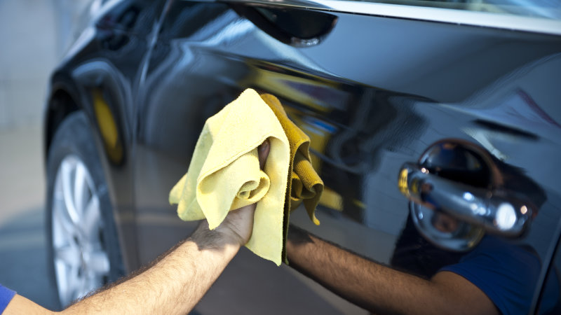
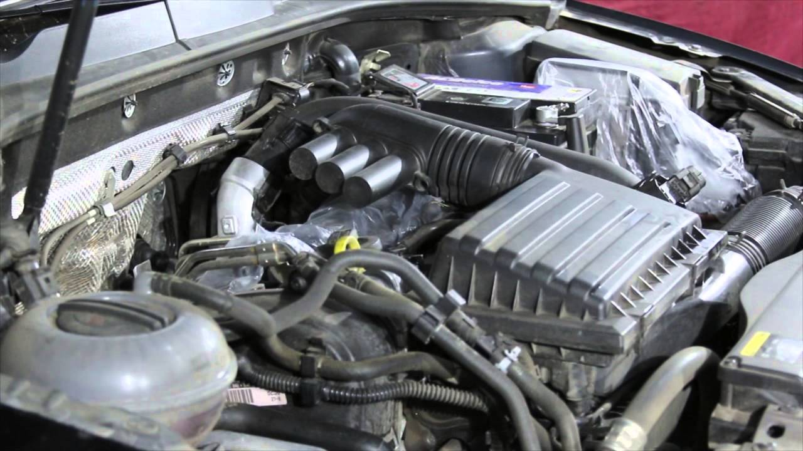
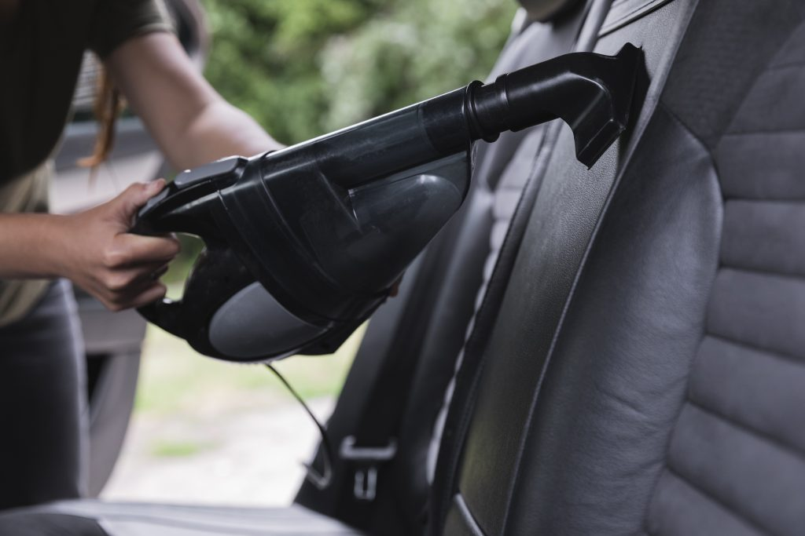
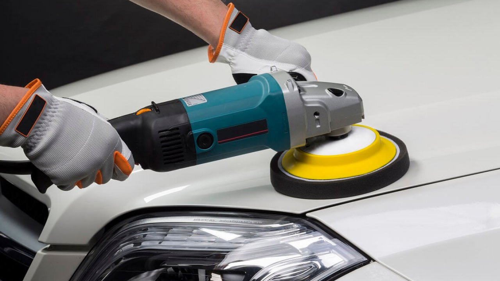

LAVAGEM A SECO
A lavagem a seco é um método de limpeza que gasta pouquíssima água, além de ser mais
eficiente e prática, mais em conta para o bolso dos proprietários — além disso, não podemos
esquecer, é muito mais benéfica à economia de água das cidades e aos esgotos.
Essa lavagem automotiva surgiu da necessidade de se economizar água em tempos de
racionamento. Assim, em vez de usar jatos de água sobre o carro, ela é feita com toalhas
específicas (de microfibras) e um produto próprio para esse tipo de limpeza, de modo que o
atrito com a lataria diminua e não arranhe o veículo.
Os motoristas ainda têm muitas inseguranças na hora de saber como se deve recorrer a ela na
hora da limpeza. Porém, como veremos a seguir, ela é sim bem vantajosa!
COMO É REALIZADA

Basicamente, o produto para a lavagem deve ser espalhado sobre a lataria do carro para
limpá-lo e dar brilho. O profissional responsável, após espalhar esse líquido, vai
eliminando a sujeira com um pano.
O ideal é que o lavador use duas ou três toalhas para isso, evitando que a pintura seja
danificada à medida que a toalha vai se gastando.
Olhando assim, parece que todo o processo é simples, não? Mas é preciso ter atenção em
alguns pontos, especialmente no que diz respeito aos produtos e materiais que serão
usados. Por isso, selecionamos a seguir as observações mais importantes sobre a lavagem
a seco.
LIMPEZA TÉCNICA DO MOTOR
O motor é completamente limpo: campos de reservatório, mangueiras, as borrachas e parte
interna do capô
com pinceis de cerdas especiais com produtos biodegradáveis que não agridem as borrachas,
partes plásticas e nem mesmo os sensores.
OS BENEFÍCIOS

Quando a limpeza é feita por um profissional especializado, utilizando os produtos e
materiais não abrasivos, além de deixar o visual do motor
bonito e brilhante, como se tivesse acabado de sair de fábrica, também auxilia na
conservação das peças e mangueiras, evitando rachaduras por ressecamento.
LIMPEZA DOS BANCOS
A limpeza de banco de carro é realizada com técnicas exclusivas e aprimoradas ao longo de
vários serviços prestados durante anos. Tem como finalidade aproximar a aparência e textura
do estofamento e do interior do carro à de um carro novo e previne o envelhecimento precoce
do tecido do banco, sem causar danos.
A limpeza de banco de carro não demanda a remoção do estofado ou das estruturas internas do
veículo, diferentemente dos procedimentos adotados em um lava a jato. Portanto, não oferece
riscos de afetar os encaixes internos e a colagem do banco do veículo.
É recomendado que o procedimento de limpeza do interior dos carros ou apenas do banco seja
realizado a cada três ou quatro meses.

CUIDADOS COM BANCO DE COURO
Além da limpeza de estofados de tecido, trabalhamos, ainda, com a limpeza e higienização de
bancos de couro. É importante saber que os bancos de couro dos carros merecem uma atenção
maior na hora da limpeza.
Por isso, é recomendada a limpeza e a higienização feita por profissionais, a fim de
garantir a vitalidade de seu banco de couro. O cuidado deve ser ainda maior se o couro for
escuro, já que não demonstra a sujeira.
Outra técnica importante é a hidratação do couro, pois, com o tempo, esse material perde sua
umidade e suavidade. Esse procedimento evita o ressecamento, que posteriormente causa
rachaduras e danos permanentes.
POLIMENTO
O polimento automotivo tem a função de reparar determinados danos que ocorrem à pintura
do
carro no dia-a-dia, como manchas causadas por árvores ou pássaros, pequenos riscos, e
até a
perda do brilho original. A simples exposição ao sol e à chuva pode desgastar a pintura.
O serviço é realizado com polidores abrasivos e uma máquina, chamada politriz, e deve
ser
feito exclusivamente por profissionais. E é importante frisar que o uso incorreto dos
produtos e ferramentas podem causar danos mais sérios à pintura do veículo.
É necessário que um técnico avalie o carro para definir se esse serviço é a melhor
opção,
pois apenas um profissional poderá dizer, com certeza, se realizar um polimento é o
tratamento ideal, ou se superfície precisa passar por um processo diferente, como a
descontaminação ou a repintura.

TIPO DE ENCERAMENTO
Existem dois serviços de polimento oferecidos:
O chamado Enceramento Proteção é o serviço padrão de polimento, onde são utilizados
polidores de altíssima performance que são aplicados com equipamentos profissionais. Esse
serviço promove a remoção eficaz de riscos superficiais e eliminação de manchas causadas por
intempéries.
Já o Enceramento Premium soma o serviço descrito acima com a máxima proteção. Esse serviço
consiste de um polimento, seguido de descontaminação da pintura utilizando produtos
profissionais, além da aplicação de Cera de Carnaúba Premium, que promove proteção à
pintura. Assim, a lataria fica ainda mais protegida.